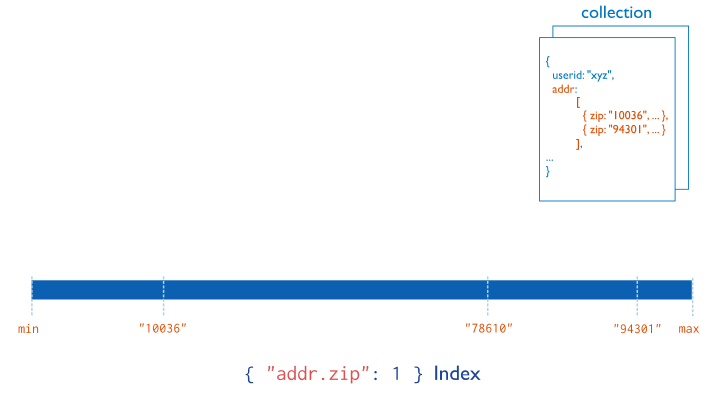

MongoDB indexes
Why are indexes needed
In short: they help us improve queries performance (both in memory and in time).
Without indexes, MongoDB must perform a collection scan, i.e. scan every document in a collection, to select those documents that match the query statement.
What is index
Index is a special data structure (B-tree) that store a small portion of the collection's data set in an easy to traverse form.

Creating indexes
db.collection.createIndex( <key and index type specification>, <options> )db.collection.createIndex( { name: -1 } )Index Types
Single Field

db.collection.createIndex( { score: 1 } )Compound Index

db.collection.createIndex( { userid: 1, score: -1 } )Multikey Index
db.collection.createIndex( { "addr.zip": 1 } )Text indexes
MongoDB provides text indexes to support text search queries on string content. text indexes can include any field whose value is a string or an array of string elements.
db.reviews.createIndex( { comments: "text" } )Index properties
Name
The default name for an index is the concatenation of the indexed keys and each key's direction in the index ( i.e. 1 or -1) using underscores as a separator.
db.products.createIndex(
{ item: 1, quantity: -1 } ,
{ name: "query for inventory" }
)Unique Indexes
A unique index ensures that the indexed fields do not store duplicate values; i.e. enforces uniqueness for the indexed fields. By default, MongoDB creates a unique index on the _id field during the creation of a collection.
db.collection.createIndex( <key and index type specification>, { unique: true } )Partial Indexes
Partial indexes only index the documents in a collection that meet a specified filter expression. By indexing a subset of the documents in a collection, partial indexes have lower storage requirements and reduced performance costs for index creation and maintenance.
db.restaurants.createIndex(
{ cuisine: 1, name: 1 },
{ partialFilterExpression: { rating: { $gt: 5 } } }
)Sparse Indexes
Sparse indexes only contain entries for documents that have the indexed field, even if the index field contains a null value. The index skips over any document that is missing the indexed field. The index is "sparse" because it does not include all documents of a collection
db.addresses.createIndex( { "xmpp_id": 1 }, { sparse: true } )TTL Indexes
TTL indexes are special indexes that MongoDB can use to automatically remove documents from a collection after a certain amount of time. This is ideal for certain types of information like machine generated event data, logs, and session information that only need to persist in a database for a finite amount of time.
db.eventlog.createIndex( { "lastModifiedDate": 1 }, { expireAfterSeconds: 3600 } )Hidden Indexes
Hidden indexes are not visible to the query planner and cannot be used to support a query.
By hiding an index from the planner, users can evaluate the potential impact of dropping an index without actually dropping the index.
db.addresses.createIndex(
{ borough: 1 },
{ hidden: true }
);db.restaurants.hideIndex( "borough_1_ratings_1" )db.restaurants.unhideIndex( "borough_1_ratings_1" );